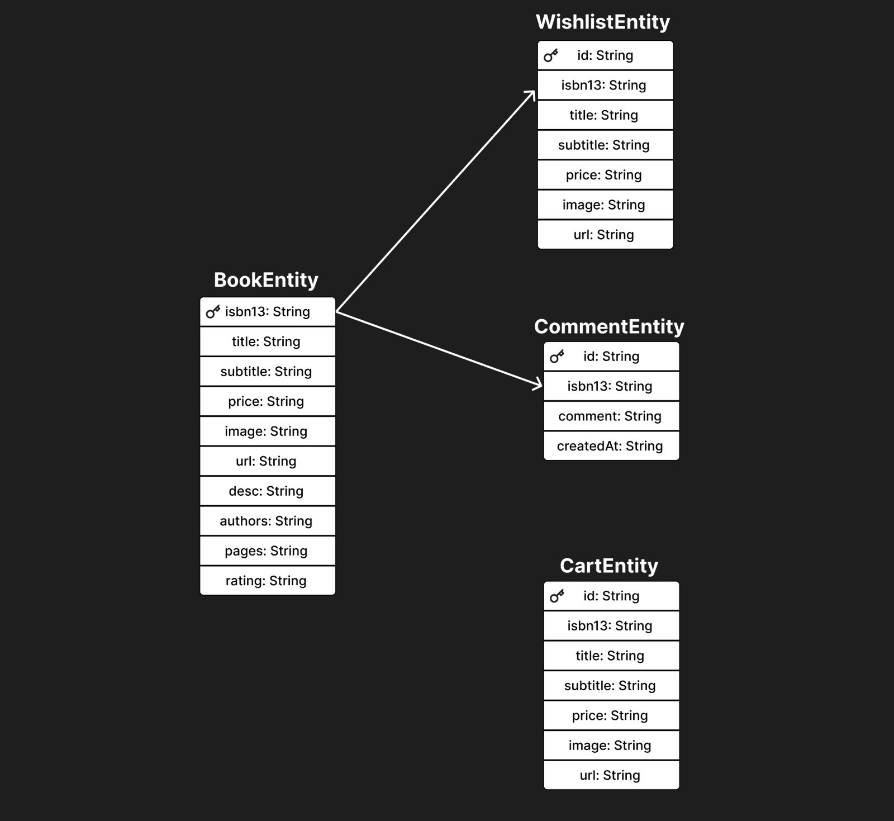

Bookstore App
Bookstore is a mobile bookstore app designed to make book discovery and management easy. Users can search for books, create personalized wishlists, and leave comments on their favorite books. The app provides an engaging experience for book enthusiasts, students, and language learners.
Team Members
- Alikhan Manat
- Selina Hacker
Mockups and User Flow
Mockups
Below are the wireframes showcasing the app's key screens:
Welcome Screen
Displays an introductory message to welcome users.
Home Screen
Features a search bar and displays books..
Book Details Screen
Provides details about the book, user reviews, and options to add it to the cart or wishlist.
The Book Details Screen features also a comment section, where everyone can leave their thoughts about the book.
Shopping Cart
Lists items selected for purchase and allows users to proceed to checkout.

Wishlist Screen
Displays books saved by the user for future reference.
Checkout Screen
Shows a summary of the selected book's details, including price and a purchase button.

After pressing the "Purchase" button, the user gets asked if he really wants to buy the book.
Checkout Confirmation
Confirms successful completion of the purchase with a success message.
User Flow
The flow diagram below illustrates how users navigate through the app's screens:
Usability Test Plan
Test Design
The purpose of the test is to evaluate the usability of the app, focusing on how intuitive and efficient it is for users to search for, purchase, and manage books, as well as to identify areas for improvement based on heuristic evaluations and user feedback.
Participants
Heuristic Evaluation
Conducted by the Bookstore team members familiar with usability principles to identify design flaws early on.
User Testing
Participants will include 5-7 users from the target audience, such as book enthusiasts and students.
Environment
Testing
We use our Figma Prototype for the User Testing.
Tools
Note-taking tools will be used to document observations.
Procedure
Heuristic Evaluation
Evaluators will apply Nielsen’s 10 Usability Heuristics to assess the prototype.
User Testing
Participants will perform assigned tasks while observers record task times, completion rates, and any errors.
Post-Test Feedback
Participants will complete SUS questionnaires.
Analysis
Task performance metrics, user feedback, and heuristic evaluation results will be combined to identify usability issues and prioritize fixes.
Entity Relationship Diagram
Below is our ER-Diagram, which shows our Database Design.
Hypotheses and Research Questions
Hypotheses
Users will find the app intuitive for purchasing books, with an easy process for managing their Wishlist.
Research Questions
- How intuitive and efficient is the process of discovering, purchasing, and managing books in the app?
- How satisfied are users with the interface for favouriting books and managing their Wishlist?
Data to Collect
- Task Completion Rate
- Time on Task
- Error Rate
- User Feedback (SUS)
Methods
Heuristic Evaluation
Performed by team members to review app design on usability principles.
User Usability Test
Participants will perform real-world tasks to identify usability gaps.
Tasks to Test
- Add a book to the Wishlist.
- Remove a book from your Wishlist.
- View details for a book, including its price and comments.
- Add a book to the cart and proceed to checkout.
Results of Heuristic Evaluation
As mentioned before we used Jakob Nielsen's 10 Usability Heuristics to identify design flaws. Below is a summary of the findings:
| # | Heuristic | Issue | Severity | Suggestion |
|---|---|---|---|---|
| 1 | Visibility of system status | No feedback after tapping “Add to Shopping Cart” or “Remove from Wishlist” | 3 (High) | Include a popup message confirming the action |
| 2 | User Control and Freedom | No option to undo “Remove from Wishlist” action | 3 (High) | Provide an “Undo” button after removing an item from the Wishlist |
| 3 | Error Prevention | No confirmation dialog before removing an item from the shopping cart | 2 (Moderate) | Add a confirmation dialog |
| 4 | Flexibility and efficiency of use | No search history or quick filters for frequently used queries | 2 (Moderate) | Include search history or shortcuts to improve user efficiency |
| 5 | Aesthetic and minimalist design | A lot of unused space in the “Bookstore” title bar | 1 (Low) | Reduce unused space in the title bar to enhance aesthetics |
| 6 | Help users recognize, diagnose, and recover from errors | If the user enters an invalid search query, there is no message to inform them that no results were found | 3 (High) | Add a “No results found” message |
The heuristic evaluation identified several usability issues, with the most critical ones being the lack of feedback for user actions and limited control over undoing actions. Key improvements include adding confirmation dialogs, better feedback mechanisms, and more efficient navigation features like search history or quick filters.
Out of the six issues, three were categorized as high severity, indicating that addressing these will have the most significant impact on user experience. The remaining issues were moderate to low severity and focus more on enhancing aesthetics and preventing minor errors.
Overall, the evaluation highlights the app's strengths in design while pointing out specific areas for refinement to achieve a more intuitive and user-friendly interface.
Results of the Usability Test
The Usabilty Test was performed with our initial mockups. We did the test with 5 participants, all of them were male. The age range of the participants was from 21 to 25 years. Our team tested the following 4 tasks we already mentioned in the "Usability Test Plan" sector.
For the Analysis of our Data we used RStudio. The graph results are presented in the following section.
Time on Task
While the Usability Test we recorded the Time on Task for each participant. In the graph below you can clearly see that 3 of 4 tasks were completed under 14 seconds. That shows that the participants were able to complete the tasks very efficiently. The 4th task "Add a book to the cart and proceed to checkout." took the longest with around 24 seconds. Which shows that this task was a bit complex or just took a little bit longer then the other ones.
Success Rate
We also recorded the Success Rate of each task. The Success Rate shows the percentage of users who were able to complete a task. In our test we achieved a complete success, which means we had no errors to record. In the graph below you can see the Success Rate by task.
SUS Score Distribution
After the completion of all tasks, we told the participants to fill out our System Usability Scale (SUS) questionnaire on Google Forms. Our team achieved an average SUS score of 95, which is an excellent score.
Reflections
Selina Hacker
The third semester code lab was undoubtedly the most enjoyable experience I've had so far. Working collaboratively made the project both more manageable and more enjoyable. Working on the bookstore app gave me a chance to really dive into app development, especially in making the app look good, analysing how users interact with it, and keeping our project documents organized. One big challenge was adapting the different features of the app to make it look engaging.
I had a few different jobs on this project. Mostly, I focused on the design of the app, where I tried to make sure that everything looked clean and not too cluttered. I designed every screen and really tried to meet the design of our mock-up screens. Of course, I ran into a lot of UI/UX design challenges, but in the end, I managed to do everything I wanted to do. The greatest challenge I faced was the welcome screen with the fitting animation, which was necessary due to uneven UI loading.
Also, after receiving some feedback, I made some changes to different interactions to ensure every action was clear.
I was also in charge of our GitHub pages, making sure our documentation was well-structured and that everything we needed was there.
This project taught me a lot about planning ahead, which I think Alikhan and I managed very well. I also learned how valuable it is to use data to make decisions. I really enjoyed working with my teammate; it was great to share ideas with each other.
Looking back, I see how much I’ve learned and how much more confident I feel now about making apps. The challenges were tough, and a few were very time-consuming, but getting through them taught me that I can handle problems and find solutions.
Overall, working on this project was far less stressful with a partner than alone, and I greatly appreciate Alikhan for being such an excellent teammate.
Alikhan Manat
As I primarily took responsibility for the app’s functionality, I found the overall process relatively straightforward, thanks to the Mobile Coding course conducted by Christoph Oswald. However, I struggled to fully understand why all UI components should be contained in composables, why it is necessary to create ViewModels for each screen, and how to trigger a ViewModel to re-execute and fetch the most updated data. I received valuable help from tutors Katharina, Ramon Brullo, and Hesham in resolving these challenges.
As mentioned earlier, my responsibilities included setting up a database with Entities, DAOs, Strategy Migration, Repository, ViewModels, search functionality, and buttons for adding books to the wishlist and cart. I believe the app successfully fulfilled all the goals Selina and I set for our final product, such as enabling users to discover new books, save and purchase them, and leave comments on specific titles.
For future improvements, I would consider replacing the current API, as it primarily provides IT books, which was not entirely aligned with our initial plan. Additionally, I would incorporate new features based on feedback gathered during the exhibition process.
Download the APK here
Below you can download the zip folder with our APK file inside. Unzip the folder and you can install it on your android phone.
Bookstore.zip